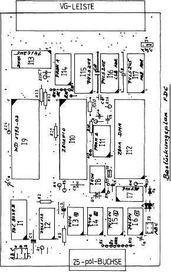

80-Bus Journal |
September 1983 · Ausgabe 9 |
Änderungen am FDC- Schaltplan 7/8-83
Anscheinend ist es nie möglich, eine Hardwareschaltung mit Niveau ohne Nachlese zu veröffentlichen. Im Falle des Floppy-Controllers ist das nicht so schlimm, da die Platine erst jetzt erhältlich ist und die Änderungen noch vor der frustrierenden Fehlersuche vorgenommen werden können.
Nur wenige Änderungen betreffen die Platine selbst; hauptsächlich handelt es sich um leicht änderbare Korrekturen im Schaltplan oder Bestückungen, die nicht vorgenommen werden müssen. Die wirklichen Hardwareänderungen sind (z. B. auf der Rückseite der Platine) leicht vorzunehmen.
Die Zuordnung der Widerstände und Kondensatoren kann mit Hilfe des Bestückungsplanes und des Layouts leicht in den Schaltplan übertragen werden, falls dies notwendig ist. Des Layout war zum Erscheinungszeitpunkt des letzten Heftes leider noch nicht fertig, sonst hätten die Änderungen noch vor Abdruck in den Schaltplan eingetragen werden können.
Hier nun die genaue Liste der Bauteile, die im letzten Heft dem Schaltplan noch nicht eindeutig zugewiesen wurden:
R6 – R13 8fach SIL 150 Ω
R16, R23 10K
R3, R4, R5, R17, R22, R24, R25, R26, R28,
R29 u. 4*1K (SIL) 1K
R18, R19, R21 100 Ω
R14, R15 330 Ω
R1, R2 220K
CB 4* 100uF
CT 10 uF
C3 1 uF
C5, C6, C7 100pF
C2 15 uF
C1 47 uF
Q1 16MHz Quarz
Zur Treibersoftware erfahren Sie etwas in dem Artikel „Seite für Floppy-Einsteiger“ an anderer Stelle dieses Heftes. Als Programmgrundlage dazu dient das gut kommentierte Listing in Heft 5/83 Seite 10. (Beachten: die Zeile „inr hl ;niederes Byte von Adresse“ in der Interruptroutine muß gestrichen werden!) Red.

| Seite 14 von 28 |
|---|